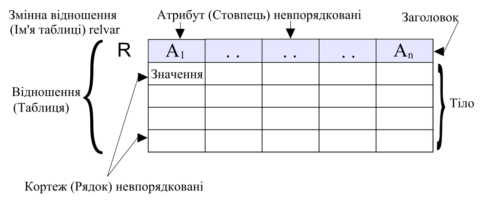
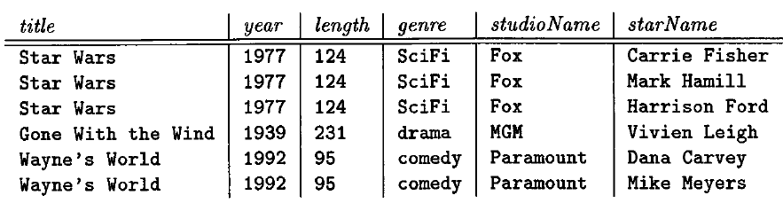

Зміст
База даних - колекція структурованих даних.
Домен - обмежена підмножина значень даного типу. Тип - множина значень.
Ti, i=1,...n - множина типів
Кортежем, визначеним з допомогою цих типів, називається множина впорядкованих трійок <Ai,Ti,vi>, де
Ai - ім'я атрибута
Ti - ім'я типа
vi - значення типу Ti
<Ai,Ti> - атрибут
vi - значення атрибута

Функціональна залежність над відношенням R є твердженням в такій формі:
Якщо два кортежі R мають всі однакові атрибути A1,A2,...An, то вони мають мати однаковими всі атрибути іншого списку атрибутів B1,B2...Bm.
A1,A2,...An→B1,B2...Bm
Приклад.

title,year→length,genre,studioName - визначають функціональну залежність
title,year→starName - не задовольняють ФЗ
ER-діаграма - entity-relationship. Один з типів UML діаграм.
Базові реляційні оператори (вхідні відношення повинні належати до одного типу):
Інші реляційні оператори: сортування, вилучення дублікатів, агрегація,групування, джойни.
Обмеження цілісності визначають множину допустимих станів і переходи між ними.
Класи обмежень за способом підтримки:
a)Потенційний ключ
Підмножина атрибутів відношення, яка унікально визначає запис, а також не може бути скорочена.
Гарантований спосіб точно вказати який-небудь кортеж - вказати значення потенційного ключа.
b)Первинний ключ
Один вибраний потенційний ключ.
c)Суперключ
Множина атрибутів (або один з атрибутів), яка унікально ідентифікує рядки в таблиці.
Потенційний ключ - мінімальний суперключ.
Приклад
| ім'я | номер | династія |
|---|---|---|
| Едвард | II | Плантагенет |
| Едвард | III | Плантагенет |
| Річард | III | Плантагенет |
| Генрі | IV | Панкастер |
{ім'я,номер} - потенційний ключ,
{ім'я,номер,династія}
d)Зовнішній ключ
Атрибут(набір атрибутів) в деякому відношенні R, який відповідає первинному ключу іншого відношення або того ж таки відношення.
Посилальна цілісність - необхідна риса БД, яка полягає у відсутності в будь-якому з її відношень зовнішніх ключів, що посилаються на відсутні кортежі.
e)Тригери
Тригер - збережена процедура особливого типу,яку користувач не викликає явно, а використання якої обумовлено настанням визначеної події у реляційній БД:
Автоматично запускається сервером. Зміни відбуваються у вигляді транзакцій.
Приклад
CREATE OR REPLACE TRIGGER SupplierUpdatedTrigger
ALTER UPDATE ON supplier
BEGIN
INSERT INTO infoTable VALUES('table supplier has changed');
END;
f)Курсор
Курсор - об'єкт БД, який дозволяє застосуванням процювати з записами "по одній", а не зразу з множиною, як в звичайних SQL командах.
Курсор буває:
Може повертати один рядок, кілька рядків бо жодного рядка. Курсор слід закривати, а потім знову відкривати.
Оператори управління явним курсором:
Атрибути:
g)Обмеження цілісності рівня БД (ASSERTION)
Assertion - предикат, що виражає умову, яку ми хочемо щоб БД постійно задовільняла.
В SQL не підтримуються обмеження БД. В ньому підтримуються загальні обмеження, які в специфікації SQL називаються assertion. Обмеження на домен, функціональна залежність і посилальна цілісність є особливими формами assertion.
CREATE ASSERTION ass_name CHECK predicate
DROP ASSERTION
Приклад 1. Значення статусу кожного поставщика повинно знаходитися в межах від 1 до 100.
CREATE ASSERTION SC1 CHECK
(NOT EXISTS( SELECT * FROM S
WHERE S.STATUS<0 OR
S.STATUS>100));
Приклад 1. Різні постачальники не можкть мати однакових номерів постачальників.
CREATE ASSERTION SC2 CHECK
(UNIQUE (SELECT S.SNUM FROM S));
h)Збережені процедури
Збережена процедура - підпрограма, доступна застосункам, які мають доступ до СКБД.
Типові застосування:
CALL PROCEDURE(...)
IF,WHILE,LOOP,REPEAT,CASE ...
Нормалізація БД - покроковий процес розбиття одного відношення відповідно до алгоритму нормалізації на декілька відношень на базі функціональних залежностей. Уникнення надмірності.
a)НФ1.
b)НФ2.
c)НФ3.
Індекс- об'єкт БД, призначений для пришвидшення пошуку і сортування даних.
Індекси пришвидшують пошук, join по атрибутах. Додавання, видаленн, зміна таблиці стають складнішими і повільнішими.
Одновимірні ідекси створюються за допомогою hash-функцій і B-дерев(вид збалансованих дерев).
CREATE INDEX KeyIndex ON Movies(title,year)
a)Щільні індекси.(Clustered index)
Визначає фізичний порядок даних в таблиці. Зцієї причини таблиця може мати лише один щільний індекс.
primary key - автоматичне створення clustered index. Індекс може мати кілька колонок.
Аналогією є телефонний довідник, де дані посортовані за прізвищем.
CREATE Clustered Index ___ ON EmployeeTable(Gender Desc,Salary Asc)
b)Розріджені індекси.(Non-clustered index)
Як індекс в книжці. Дані зберігаються в одному місці, індекс - в іншому. Індекс містить вказівники на місце зберігання даних.
Щільний індекс є швидший так, як працює безпосередньо з таблицею і він не потребує додаткового місця на диску.
Транзакція - група послідовних операцій з базою даних, яка є логічною одиницею роботи з даними. Гарантує збереження цілісності бази даних.
a)ACID
Всі команди або виконані або скасовані одночасно. Якщо команди виконалися частково відбувається rollback.
Cистема знаходиться в узгодженому стані до початку транзакції і повинна залишитись в узгодженому стані після завершення транзакції.
Наприклад, при переведенні коштів з рахунка на рахунок, кошти можуть спочатку зніматись з першого рахунку, після чого нараховуватись на другий. Відповідно, після зняття коштів, але до їх нарахування система перебуває в неузгодженому стані — коштів немає на жодному з рахунків. Але після завершення транзакції повна сума перебуватиме на другому (або першому у випадку скасування транзакції) рахунку.
Транзакція не втручається в іншу транзакцію.
Якщо користувач отримав підтверждення від системи, що транзакція виконана, він може бути впевнений, що зміни, які він зробив, не будуть відмінені через будь-який збій.
b)Журнал транзакцій
В журнал транзакції записується інформація, необхідна для повернення БД в попередній стан:
Rollback (логічна відмова) - журнал сканується ззаду і всі записи транзакції виводяться.
Rollforward (фізична відмова) - журнал сканується в прямому напрямку, починаючи з попередньої контрольної точки. Всі записи до кінця журналу.
с)Аномалії при паралельній обробці
При одночасній зміні одного блоку даних різними транзакціями, одна із змін втрачається.
Читання даних, які додані чи змінені транзакцією, яка потім відкотилася.
При повторному читанні в рамках однієї транзакції, раніше прочитані дані з'являються зміненими.
Одна транзакція в ході свого виконання декілька разів вибирає множину рядків за одними і тими ж критеріями. Інша транзакція додає, видаляє чи змінює рядки. В результаті, одні і ті ж вибірки в першій транзакції дають різні множини рядків.
d)Рівні ізоляції транзакцій
| dirty read | non-repeatable read | phantom read | ||
|---|---|---|---|---|
| read uncommitted | читання незафіксованих змін як своєї транзакції, так і паралельних транзакцій. | + | + | + |
| read committed | читання всіх змін своєї транзакції і зафіксованих змін паралельних транзакцій. | - | + | + |
| repeatable read | читання всіх змін своєї транзакції, будь-які зміни, внесені паралельними транзакціями після початку своєї, є недоступними. | - | - | + |
| serializable | впорядковані транзакції | - | - | - |